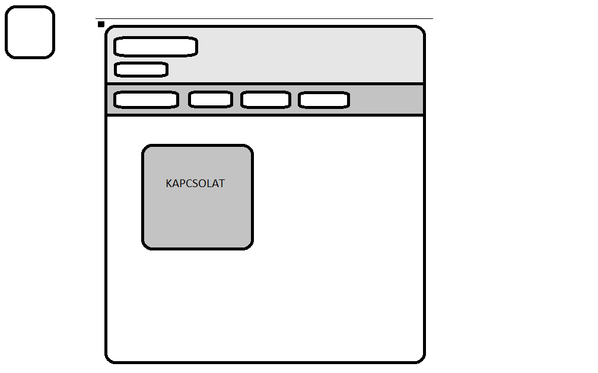
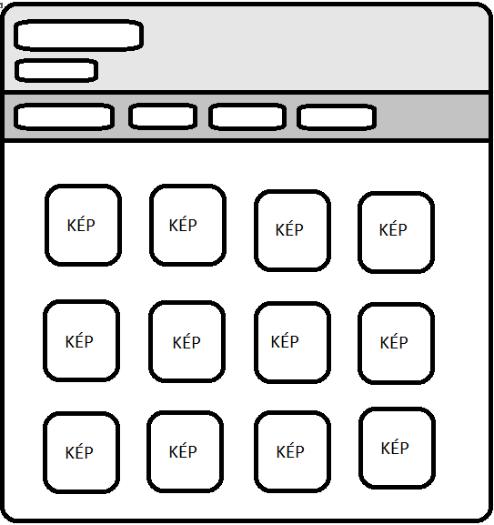
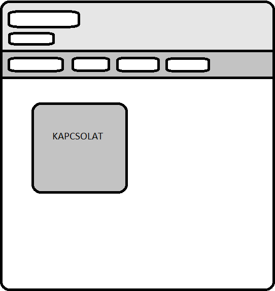

Dokumentáció
A weboldal terve:
A célom egy saját magamat tükröző oldal létrehozása volt, ami a mindennapjaimhoz kapcsolódik.
Mivel nem volt még dolgom weboldal szerkesztéssel, így az alapoktól indultam a Forms-ra feltöltött videók és YouTube tartalmak alapján. Próbáltam a kedvenc hobbim, azaz a vadászat témájában elhelyezni a weboldalt.
Itt látható a főoldal terve:

Mint az a képen látható, három fő elemből terveztem felépíteni a főoldalt:
A fejlécből, amin a nevem és a Portfólió cím látható.
Alatta a vezérlősáv, amin keresztül lehet ugrálni a menüpontok között.
Majd az oldalak legnagyobb részét kitöltő szövegrész, ahol elhelyeztem a Bemutatkozást, Rólam fül alatt a képeket és a Kapcsolat menüpont alatti Elérhetőségeimet.
A következő kép a képeket tartalmazó oldal tervét ábrázolja, amin a kedvenc hobbijaimról mutatok be képeket:

Az ezt követő kép a "Kapcsolat" oldal tervét mutatja be:

Felmerülő nehézségek és változások:
Az eredeti tervtől eltértem pár helyen, mivel előfordult, hogy problémába ütköztem.
Többször is gondot jelentett a tervezés során is a vezérlősáv kialakítása és megfelelő pozícióba helyezése. Volt vele bajom bőven..
Egy másik számomra bosszantó probléma volt a "Rólam" menüpont alatt elhelyezett képeknek a pozícionálása, amely látható, hogy még most sem vette fel teljesen a megfelelő alakzatot.
Javarészt a kisebb apró hibákat sikerült kiküszöbölnöm rengeteg próbálkozással.
Felhasznált források:
https://www.youtube.com/watch?v=URx3juKDI5U&list=PLYiFuPu36je2kcaSlieHrYWYXvmZtW2Ws
https://www.w3schools.com/
https://www.youtube.com/
https://www.google.com/